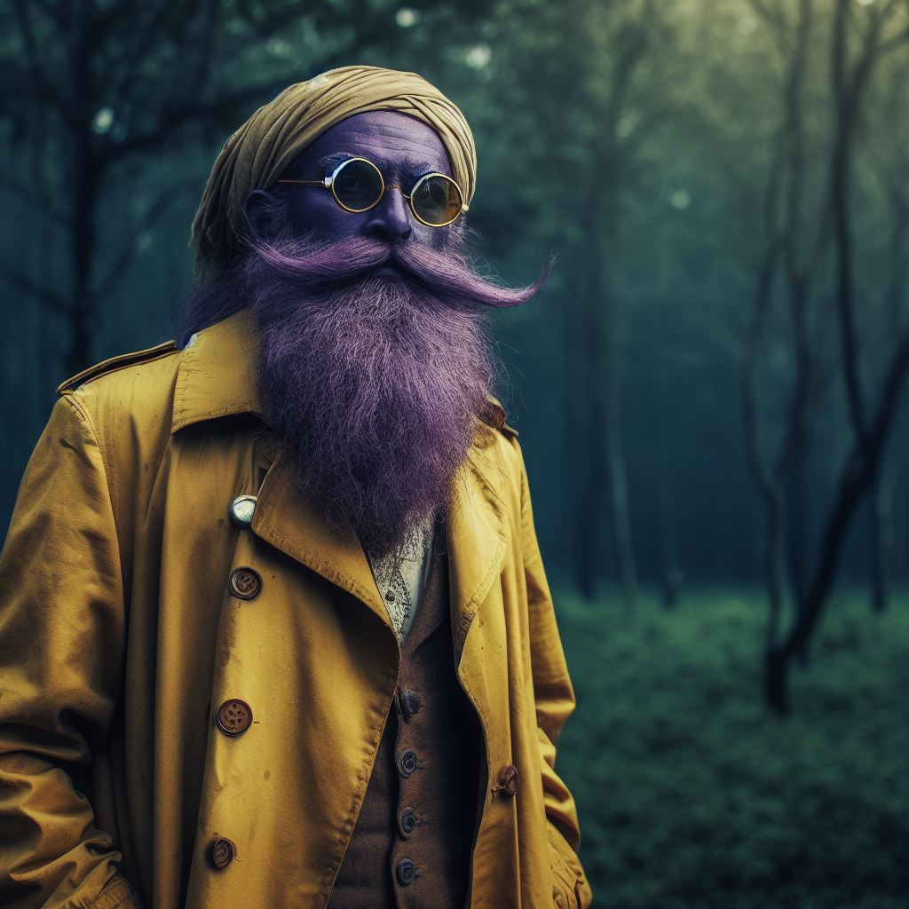

“Arriveu al castell de Mellmidok, una forta barrera mágica d’un brill blau intens protegix el castell. Vos trobeu a uns quants metros de la barrera a un extrany ser. Es una especie de mescla entre elf i orco. Es un esser de cos gros covert per una túnica groga, la seua pell es d’un color purpura pálid. Les seues orelles son llarges i puntiagudes, du el cap tapat amb un mocador i unes ulleres redonetes
“Con forme vos acosteu el home... o dona... es percata de la vostra existencia.”
LinLon:“Oooh!!! clients!!! LinLon estava a punt de plegar la paraeta i anarse a un altre lloc. Molt bé, molt bé. LinLon te molts productes que poden interesar als aventurers. Pasen i veguen.”
Es un vendedor ambulant. Poden accedir a totes les tendes desde ell.
La barrera sols pot ser desfeta per un Clérigo o amb una pedra de Permatrago. El vendedor ambulant si li ataquen desapareix com un fantasma i ja no torna a apareixer.
Hi ha un obelisc de maná prop de la bruma misteriosa, on si descansen un turno recuperen 50 de maná.